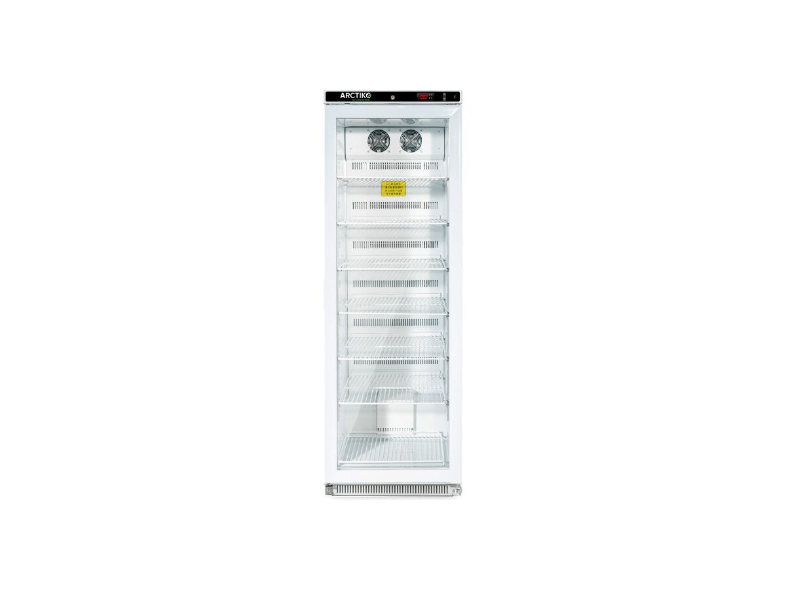
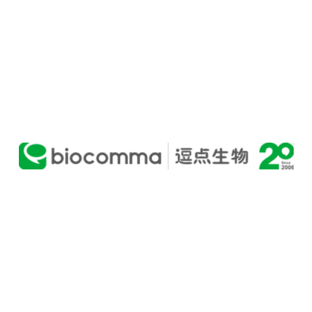

Tecan
Tecan SPARK
Microplate reader multimode untuk laboratorium klinik dan riset. Absorbansi, fluoresensi, dan luminesensi dalam satu instrumen.
Lihat detailKami mendistribusikan alat kesehatan ke rumah sakit, klinik, dan laboratorium di seluruh Indonesia, supaya tim Anda bisa fokus pada pasien, bukan pada pengadaan.

Kebutuhan pengadaan rumah sakit besar berbeda dengan klinik pratama atau laboratorium mandiri. Kami menyesuaikan jalur, dokumen, dan volume untuk masing-masing.
Pengadaan volume besar dengan dokumen tender dan jalur anggaran institusi.
Paket alat dasar dan bahan habis pakai rutin dengan pengiriman berkala.
Instrumen analitik, reagen, dan consumable dengan dukungan teknis aplikasi.
Pasokan rutin alat kesehatan dasar dan bahan habis pakai untuk layanan harian.
Empat tahap yang kami jalani sebelum alat berpindah ke tangan tim Anda.
Barang masuk lewat jalur resmi principal, dengan dokumen asal dan izin edar yang disertakan sejak awal.
Setiap unit diperiksa dan dijalankan sebelum dikirim. Hasil uji kami serahkan sebagai berita acara.
Kami kirim ke seluruh Indonesia, termasuk pengiriman terjadwal untuk instrumen yang butuh penanganan khusus.
Teknisi kami memasang alat dan menjalankan uji fungsi awal, supaya unit tiba dalam keadaan siap dipakai.
Kami adalah mitra resmi untuk 26 manufaktur alat kesehatan internasional di Indonesia.


dan masih banyak lagi
Instrumen laboratorium dipakai bertahun-tahun. Yang menentukan bukan hanya harga beli, tapi siapa yang mengurusnya setelah itu.
Teknisi kami memasang instrumen di lokasi, menjalankan uji fungsi awal, dan menyerahkan berita acara yang bisa Anda arsipkan.
Sesi pelatihan untuk analis dan operator: alur kerja harian, perawatan rutin, dan cara membaca pesan galat instrumen.
Suku cadang dan aksesori resmi dari principal, dipesan melalui jalur yang sama seperti produk utama.
Produk dari 26 principal kami, siap dikirim begitu Anda butuh. Harga tidak dipublikasikan: pengadaan institusi menyesuaikan volume dan jalur anggaran, jadi kirim permintaan dan kami balas dengan penawaran resmi.
Microplate reader multimode untuk laboratorium klinik dan riset. Absorbansi, fluoresensi, dan luminesensi dalam satu instrumen.
Lihat detail
Reader fleksibel untuk absorbansi, fluoresensi, dan luminesensi. Cocok untuk laboratorium dengan beban uji beragam.
Lihat detail
Freezer biomedis 356 liter pada −25 sampai −15 °C, dengan rak interior yang dapat disesuaikan.
Lihat detailSebelum bagian pengadaan dan laboratorium memutuskan, biasanya lima hal ini yang pertama muncul.
Kami tidak bekerja lewat sistem otomatis. Setiap permintaan penawaran dibaca dan dijawab oleh orang yang mengerti produknya.
Produk dari 26 principal, dengan spesifikasi teknis lengkap dan stok yang bisa kami cek untuk kebutuhan Anda. Tidak ada harga yang dipublikasikan: semua pengadaan melalui permintaan penawaran.
Microplate reader multimode: absorbansi, fluoresensi, luminesensi. 200–1000 nm.
Lihat detail
Reader fleksibel untuk tiga mode deteksi dalam satu unit.
Lihat detail
Reader absorbansi 400–700 nm dengan delapan filter.
Lihat detail
Microplate washer 96-well dengan delapan kanal.
Lihat detail
Chip sekali pakai untuk penghitungan sel label-free bersama modul pencitraan Spark.
Lihat detail
Freezer biomedis 356 liter, −25 sampai −15 °C.
Lihat detail
Kulkas farmasi 488 liter, 2–8 °C, pendinginan udara paksa.
Lihat detail
Ultra-low freezer 370 liter, −86 sampai −40 °C.
Lihat detail
Kulkas farmasi 395 liter, 2–8 °C, dengan defrost otomatis.
Lihat detail
Cocok untuk laboratorium klinik dan riset dengan beban uji beragam. Footprint ringkas, hasil dapat diaudit, dan terintegrasi dengan LIMS.
| Jenis | Multimode microplate reader |
|---|---|
| Aplikasi | Biokimia, HTS, analisis sel hidup |
| Pencitraan sel | Modul terintegrasi |
| Konfigurasi | Dapat dipersonalisasi |
Multimode reader membaca reaksi di dalam microplate lewat lebih dari satu metode deteksi. Reader single-mode hanya mengukur absorbansi; reader multimode menambahkan fluoresensi, luminesensi, atau time-resolved fluorescence pada satu unit.
Untuk laboratorium yang menjalankan beberapa jenis uji sekaligus, satu multimode reader menggantikan dua atau tiga instrumen terpisah. Ruang bench lebih lega, kalibrasi rutin lebih sedikit, dan alur kerja teknisi lebih sederhana.
Belum yakin varian mana yang cocok? Ceritakan jenis uji dan volume harian Anda. Kami rekomendasikan konfigurasinya, tanpa biaya konsultasi.
Instrumen lain dari principal yang sama.
Semua produk kami yang terdaftar di kategori yang sama.
Manufaktur instrumen laboratorium asal Swiss. Kami mendistribusikan lini microplate reader dan washer mereka untuk laboratorium klinik dan riset di Indonesia, berikut dukungan teknis, kalibrasi, dan suku cadangnya.
Lima entri terdaftar. Harga tidak dipublikasikan: pengadaan melalui permintaan penawaran resmi.
Multimode microplate reader untuk biokimia, HTS, dan analisis sel hidup.
Lihat detail
Reader multimode dengan monokromator dan filter, format plate 6–384 well.
Lihat detail
Absorbance reader dengan filter 405, 450, 492, dan 620 nm. Aplikasi utama ELISA.
Lihat detail
Microplate washer modular untuk pencucian plate ELISA, format 96 well.
Lihat detail
Bahan habis pakai, 50 pcs per box, 100 test. Kompatibel dengan Tecan Spark.
Lihat detailSebutkan nomor REF atau nama produk, jumlah unit, dan nama institusi. Kami balas dengan penawaran resmi, ketersediaan, dan estimasi pengiriman.
